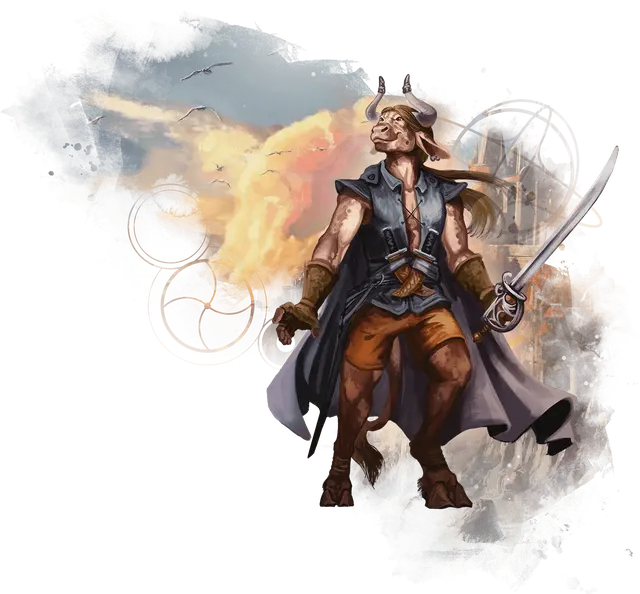

Минотавр
Minotaur

Минотавры - это гуманоиды с бочкообразной грудью и головами, напоминающими головы быков. Наделенные сверхъестественным чувством направления, минотавры становятся отличными навигаторами. Некоторые мудрецы верят, что минотавры были впервые созданы Леди Боли для патрулирования магических лабиринтов, которые она использует, чтобы заманивать в ловушку своих врагов.
Их рога варьируются в размерах от примерно 1 фута в длину и могут достигать в три раза большей длины. Минотавры часто подрезают свои рога, чтобы заострить их края, выгравировать на них символы силы или обшить их бронзой, чтобы они не сломались во время битвы.
Густые волосы спускаются по шее и мощной спине минотавров, а у некоторых есть длинные пряди волос на подбородке и щеках. Их ноги заканчиваются тяжелыми раздвоенными копытами, и они обладают длинным хвостом с хохолком.
Особенности минотавра
Вы обладаете следующими особенностями.
Увеличение характеристик. Либо значение одной характеристики по вашему выбору увеличивается на 2, а другой — на 1, либо значение трёх различных характеристик по вашему выбору увеличивается на 1.
Скорость. Ваша скорость ходьбы — 30 футов.
Вид существа. Вы — Гуманоид.
Размер. Ваш размер — Средний.
Рога. У вас есть рога, которое вы можете использовать для совершения безоружных ударов. Когда вы атакуете ими, вы наносите 1к6 + ваш модификатор Силы колющего урона вместо обычного для безоружных ударов дробящего урона.
Пронзающий натиск. Сразу после того, как в свой ход вы совершите действие Рывок и переместитесь по крайней мере на 20 футов, вы можете бонусным действием совершить одну рукопашную атаку вашими Рогами.
Сокрушительные рога. Сразу после того, как в свой ход вы попали по существу рукопашной атакой, совершенной как часть действия Атака, вы можете бонусным действием попытаться толкнуть эту цель своими рогами. Противник должен находиться в пределах 5 футов от вас и быть не более чем на один размер больше вас. Если он не преуспеет в спасброске Силы со Сл 8 + ваш Бонус мастерства + ваш модификатор Силы, то вы толкаете его на расстояние до 10 футов от себя.
Зов лабиринта. Вы всегда знаете, в каком направлении находится север, и вы совершаете с преимуществом любые проверки Мудрости (Выживание), предназначенные для навигации или выслеживания.
Языки. Ваш персонаж может говорить, читать и писать на Общем и ещё одном языке, который по вашему мнению подходит для персонажа.